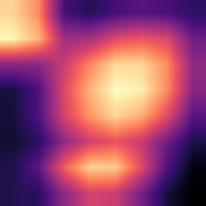
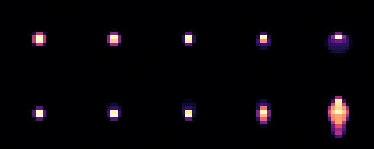
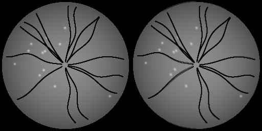

ZEISS India Campus Hackathon · BeyondCode’26 · Theme 1
Can code replace expensive glass?
Eye screening cameras use heavy, costly glass lenses. We swap most of that glass for two light molded plastic lenses and let a tiny AI sharpen the picture. This page lets you test that idea yourself.
1 · The problem we chose
Click a card to open it.
2 · Our idea: weigh it yourself
3 · How we test it
Five steps. Click each one.
4 · What we found on real photos
5 · You be the judge
What would convince you? Pick a question.
How to read the labels
Computed from data or hardware we actually ran.
From our optics or image simulation. Not a physical lens.
Uses assumed inputs such as placeholder costs.
A goal we have not met yet.
Samples:
Blur explorer
Move across the image from centre to edge. The blur applied to the picture below is scaled from the ray-traced spot size at that field position.
Ray trace: where does the light land?
Pick a field angle. Rays from a distant point pass through each lens and meet the sensor. The red patch is the blur spot, drawn to scale.
Glass, 4 elements
Polymer, 2 elements
Manufacturing yield
Share of simulated molded lenses meeting each blur floor (tolerance Monte Carlo).
Design X-ray
Spot growth when one element is removed. Tall bar means the element earns its place.
Where the classifier looks
Grad-CAM on the frozen classifier gives each field zone a design weight (Stage 1).

What the restorer does
A tiny U-Net ( parameters) takes the blurry polymer image and predicts the sharp one. It trains on many random degradations (tolerance, temperature, noise) with a loss that also asks a frozen classifier to still see the lesions.
Does it recover lesions, or invent them?
Measured on abnormal test images against the original.
Does the simpler lens still find disease?
Honest verdictsROC curves
Higher and further left is better. Click a name to hide or show it.
Verdict vs baselines
Decision Rain: every test image, one raindrop
MeasuredEach drop is one held-out test image. Pink = abnormal eye, blue = normal. A drop lands where the classifier scored it. Drag the white line in any row: pink drops to its right are caught, blue drops to its right are false alarms. Good lenses keep pink and blue apart.
Clinic simulator: what happens to 1000 patients?
Uses the lines you set above. Change how common the disease is in the screened group and see missed cases and false alarms for each lens.
Lighter
Cheaper, if the numbers hold
Cost uses placeholder coefficients, so we show the break-even instead of a headline saving.
What this does not show
- No physical prototype yet. Optics are a simplified simulation.
- Public datasets are not clinical validation. Not a medical device.
- Cost and CO₂ use placeholder coefficients.
- Restored images can invent detail, so we check lesion regions.
- Phone timing is a laptop number until bench.html is run on the phone.
Image quality: PSF and MTF, not just spot size
SimulatedRay-traced point-spread functions at five field positions (top row glass, bottom row polymer). MTF is how much contrast survives at a given detail size. Pass or fail rules were written down before the test (configs/acceptance.yaml).

Can it be made?
SimulatedHard manufacturing gates (thickness, slope, asphere departure, gap) are reported before any optical score.
Tolerance yield
SimulatedMaterial sweep
Five optical polymers, 15 pairs optimised. Pairs that fail temperature or birefringence screens are marked.
Field of view
Edge blur after re-optimising for wider fields. Wider is harder for two plastic elements.
What we tried, and what we found
SimulatedLesion errors, by type
Removed means a real lesion disappeared. Distorted means its contrast or shape changed. Invented means a lesion-like blob that is not in the original.
Can we claim restoration?
All four checks must pass. We do not round up.
Independent judge
A different classifier (MobileNet) that the restorer never saw checks the images, so the restorer cannot game its own judge.
Is this a usable photo?
Pick a photo or one of our samples. The check runs in your browser and nothing is uploaded. It tells the operator what to fix before any disease result is trusted. A quality warning and a risk result are always shown separately.
Simple browser heuristics (sharpness, exposure, contrast, visible area, noise). They are a demonstration of the workflow, not a validated quality model. The trained gate in the evaluation uses limits fitted on the glass reference images.
How the trained gate behaved on our test set
Whole camera module
EstimatedOptics are only part of the device. The saving shrinks once sensor, housing, board and mount are included.
Cost per good module
EstimatedIncludes tooling spread over volume, yield, scrap, assembly and inspection. Medians with the chance polymer is cheaper.
Carbon, cradle to grave
EstimatedRunning the restorer
Measured on a laptopBoard timing and power are estimates until measured on the real board.
Wide field by stitching
Several narrow shots are registered and blended into one wide image. Tested on synthetic tiles; the residual error flags failed registrations.

Reproduce everything
- Install
pip install -r requirements.txt
- Smoke test, no downloads
bash scripts/run_all.sh synthetic
- Real data (Colab GPU)
SEEDS="0 1 2" bash scripts/run_all.sh rfmid data/RFMiD --pretrained
- Open this demo
python -m http.server 8000 --directory web
- Phone speed
Open
/bench.htmlon the phone via your Wi-Fi address. - Real lens photos
Follow docs/REAL_CAPTURE.md, then run scripts/08_real_capture_eval.py.